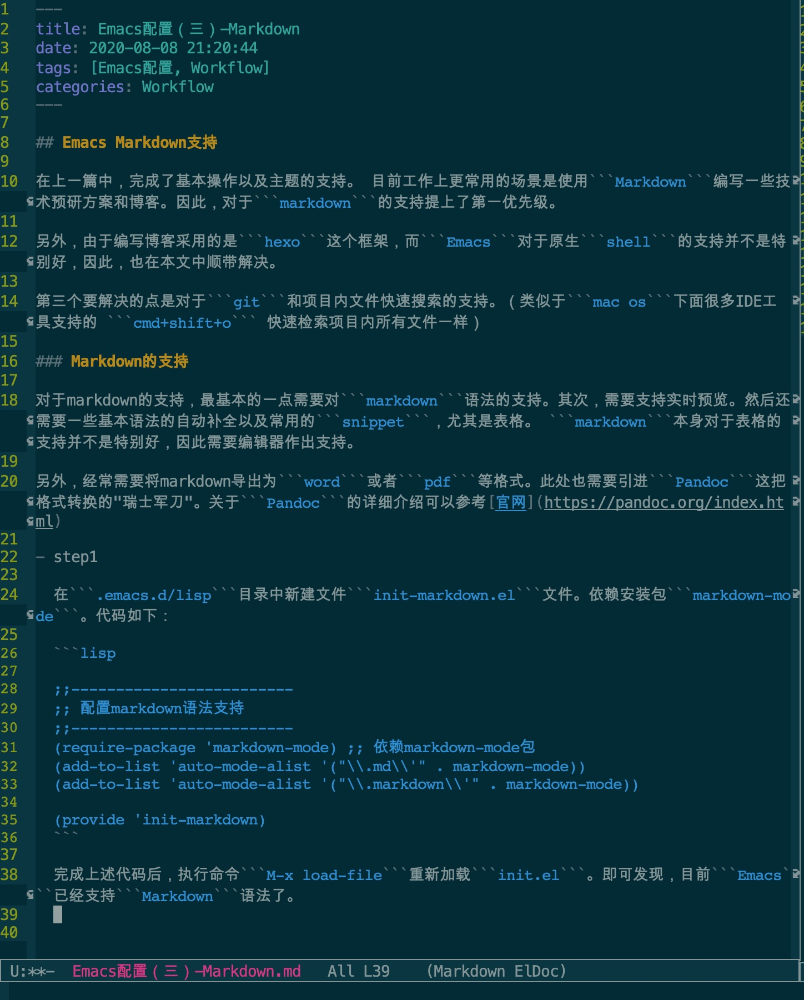

Emacs Markdown支持
在上一篇中，完成了基本操作以及主题的支持。 目前工作上更常用的场景是使用Markdown编写一些技术预研方案和博客。因此，对于markdown的支持提上了第一优先级。
另外，由于编写博客采用的是hexo这个框架，而Emacs对于原生shell的支持并不是特别好，因此，也在本文中顺带解决。
第三个要解决的点是对于git和项目内文件快速搜索的支持。（类似于mac os下面很多IDE工具支持的 cmd+shift+o 快速检索项目内所有文件一样）
Markdown的支持
对于markdown的支持，最基本的一点需要对markdown语法的支持。其次，需要支持实时预览。然后还需要一些基本语法的自动补全以及常用的snippet，尤其是表格。 markdown本身对于表格的支持并不是特别好，因此需要编辑器作出支持。
另外，经常需要将markdown导出为word或者pdf等格式。此处也需要引进Pandoc这把格式转换的”瑞士军刀”。关于Pandoc的详细介绍可以参考官网
step1 - markdown语法支持
在
.emacs.d/lisp目录中新建文件init-markdown.el文件。依赖安装包markdown-mode。代码如下：1
2
3
4
5
6
7
8
9
;;-------------------------
;; 配置markdown语法支持
;;-------------------------
(require-package 'markdown-mode) ;; 依赖markdown-mode包
(add-to-list 'auto-mode-alist '("\\.md\\'" . markdown-mode))
(add-to-list 'auto-mode-alist '("\\.markdown\\'" . markdown-mode))
(provide 'init-markdown)完成上述代码后，执行命令
M-x load-file重新加载init.el。即可发现，目前Emacs已经支持Markdownstep2 - markdown实时预览支持
仍旧在
init-markdown.el文件中,依赖安装包markdown-preview-mode。代码如下：1
(require-package 'markdown-preview-mode)Tips:
markdown-preview-mode依赖外部工具，需要在终端中执行命令gem install redcarpet进行安装，若遇到权限问题，需要使用sudo进行提权问题: 目前的方式只能在浏览器中预览。 需要实现的方式为在左右两边分屏实现。 昨天为
markdown原文，右边为实时预览界面。需要再找其他解决方案。step3 - 自动补全&snippet支持
常用的命令快捷键如下:
1
2
3
4
5
6
7
8
9
10
11
12
13
14
15
16
17
18
19
20
21
22C-c C-t n: 插入标题, # title # 类型其中 n 为 1 到 6, 对应于 HTML 对应的标题.
C-c C-t t: 插入标题, underline 类型, =.
C-c C-t s: 插入标题, underline 类型, -.
C-c -: 插入水平线, 默认插入设定的每行字节数的减号.
C-c c-a L: 插入引用链接, 或者 C-c C-a r, [text][label].
C-c C-a l: 插入链接, [text](url).
C-c C-a f: 插入注脚.
C-c C-i i: 插入图像, 或者 C-c TAB i, .
C-c C-i I: 插入引用图像, 或者 C-c TAB I, ![text][label].
C-c C-s b: 插入引用, >.
C-c C-s c: 插入代码, 用撇号包围的.
C-c C-s s: 粗体.
C-c C-p e: 意大利体.
C-c C-x d: 向下移动列表.
C-c C-x l: 提升列表等级, 即减少空格.
C-c C-x m: 插入列表项.
C-c C-x r: 降低列表等级, 即增加空格.
C-c C-x u: 向上移动列表.
Shell支持
Emacs原生支持shell，使用命令M-x shell即可打开原生的shell窗口。但是存在一些问题，比如，对于中文和powerline类型字体支持并不好。那么在这里，采用eshell来解决这些问题。
执行命令eshell即可进入到eshell模式。该shell对于中文支持没问题，不过对比zsh或者oh-my-zsh，还是差了不少功能。